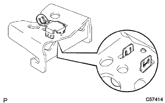
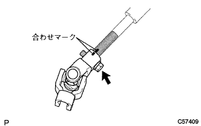

ステアリングコラムASSY 組み付け |
| 1. イグニッション OR スタータ スイッチASSY取り付け |
スクリュー2本で、イグニッション(スタータ)スイッチASSYをステアリングコラムブラケットASSY UPRに取り付ける。
| 2. アンロックウォーニング スイッチASSY取り付け |
アンロックウォーニングスイッチASSYをスライドさせ、ステアリングコラムブラケットASSY UPRに取り付ける。
アンロックウォーニングスイッチASSYのコネクタをイグニツシヨン(スタータ)スイツチASSYに取り付ける。
| 3. イグニツシヨンスイツチロツクシリンダーASSY取り付け |
イグニツシヨンスイツチロツクシリンダーASSYをACCの位置に合わせる。
イグニツシヨンスイツチロツクシリンダーASSYを挿入する。
イグニツシヨンスイツチロツクシリンダーASSYが確実に固定されていることを確認する。
| 4. ステアリングロツク機構点検 |
キーを抜いたとき、ステアリングロック機構が作動することを確認する。
キーを差しACCの位置にしたとき、ステアリングロック機構が解除されることを点検する。
| 5. ステアリングメイン シャフトASSY取り付け |
 |
SSTを使用して、新品のステアリングメインシャフトスナップリング(インナ側)をステアリングメインシャフトASSYに取り付ける。
ステアリングメインシャフトASSYをステアリングコラムチューブに取り付ける。
ステアリングコラムチューブをアルミ板を介してバイスに固定する。
 |
SSTを使用して、新品のステアリングメインシャフトスナップリング(アウタ側)をステアリングメインシャフトASSYに取り付ける。
| 6. ステアリングメインシャフト ブシュ取り付け |
 |
新品のステアリングメインシヤフトブツシユの内側にMPグリース2を塗布する。
SSTおよびハンマーを使用して、新品のステアリングシヤフトブツシユを取り付ける。
| 7. ステアリングコラムクランプ取り付け |
|  |
ツメをかん合させ、新品のステアリングコラムクランプをブレイクアウエイブラケツトに取り付ける。
| 8. ブレイクアウェイブラケット取り付け |
 |
ステアリングコラムチユーブ、チルトレバーロツクボルトおよびチルトステアリングストッパーの図の位置にMPグリースNo.2を塗布する。
ステアリングコラムチユーブにブレイクアウエイブラケツト、チルトレバーロツクボルト、チルトステアリングストッパーおよびチルトステアリングサポートカラーNo.2を取り付ける。
| 9. ステアリングチルトレバー取り付け |
ステアリングチルトレバーの図の位置にMPグリースNo.2を塗布する。
チルトステアリングアジヤステイングナツトでステアリングチルトレバーを取り付ける。
バネばかりを使用して、図の位置でステアリングチルトレバーロック操作荷重(レバーロック時)を点検する。
| 10. チルトステアリングサポートリインホースNo.1取り付け |
 |
ボルトでチルトステアリングサポートリインホースNo.1を取り付ける。
| 11. チルトステアリングサポートカラーNo.1取り付け |
 |
ツメをかん合させ、チルトステアリングサポートカラーNo.1(黒色)をステアリングコラムチユーブに取り付ける。
| 12. チルトステアリングサポートカラーNo.1取り付け |
ツメをかん合させ、チルトステアリングサポートカラーNo.1(白色)をステアリングコラムチユーブに取り付ける。
| 13. ステアリングコラムブラケットスペーサ取り付け |
 |
SSTおよびハンマーを使用して、ステアリングコラムブラケツトスペーサを取り付ける。
| 14. ステアリングコラム ブラケットASSY UPR取り付け |
 |
ステアリングコラムブラケットASSY UPRおよびシフトレバーリテーナーを新品のステアリングロツクセツトボルトで仮付けする。
 |
ピンポンチおよびハンマーを使用して、新品のステアリングロツクピンでステアリングコラムブラケツトASSY UPRおよびシフトレバーリテーナーを固定する。
ステアリングロツクセツトボルトがねじ切れるまで締付ける。
| 15. ステアリングインタミディエイト シャフトASSY NO.2取り付け |
 |
ステアリングインタミディエイトシヤフトASSY No.2とステアリングスライデイングヨークの合わせマークを合わせ、ボルトで取り付ける。
| 16. ステアリングスライディング ヨークSUB-ASSY取り付け |
|  |
ステアリングインタミデイエイトシヤフトASSY No.2とステアリングスライデイングヨークの合わせマークを合わせ、ボルトで仮付けする。